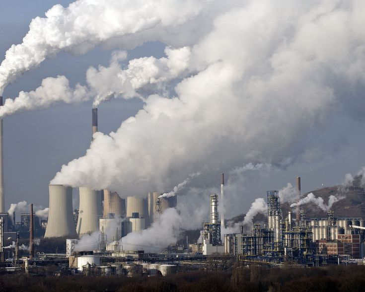
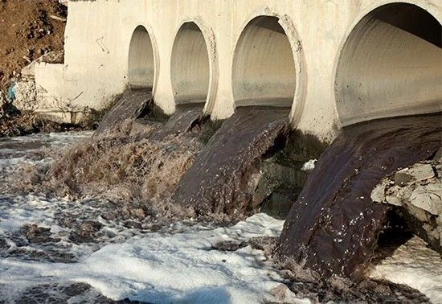
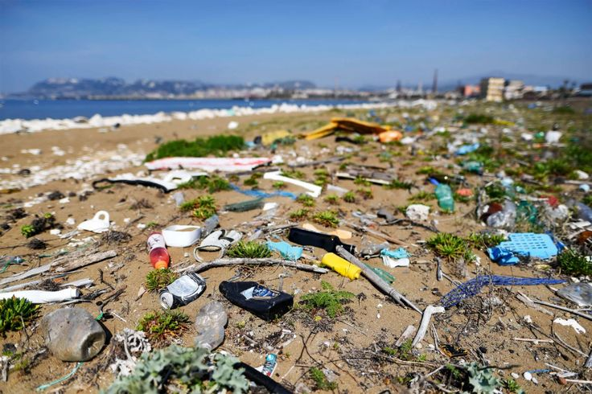

Pencemaran lingkungan adalah masuknya makhluk hidup, zat, energi, atau komponen lain ke dalam lingkungan yang mengakibatkan kualitas lingkungan turun sehingga tidak berfungsi sebagaimana mestinya.Lingkungan yang tercemar bisa membahayakan manusia, hewan, tumbuhan, bahkan merusak keseimbangan ekosistem.
Pencemaran Udara

Pencemaran udara adalah kondisi ketika kualitas udara tercemar oleh zat-zat berbahaya seperti asap kendaraan bermotor, emisi industri, debu, gas beracun, maupun partikel-partikel kimia yang dapat mengganggu kesehatan makhluk hidup dan keseimbangan lingkungan. Pencemaran udara adalah masalah serius yang berdampak pada kesehatan manusia dan kelestarian lingkungan. Upaya pengendalian dan pencegahan perlu dilakukan bersama-sama, baik oleh pemerintah, masyarakat, maupun dunia industri, agar udara tetap bersih dan layak untuk dihirup generasi sekarang maupun yang akan datang.
- Penyebab
- Asap kendaraan bermotor (CO, NO₂, Pb).
- Asap pabrik (SO₂, debu, karbon monoksida).
- Kebakaran hutan (asap pekat, partikulat).
- Gas rumah kaca (CO₂, CH₄).
- Dampak
- Gangguan pernapasan (ISPA, asma, kanker paru).
- Hujan asam yang merusak bangunan & tanah..
- Pemanasan global & perubahan iklim.
Pencemaran Air

Pencemaran air adalah masuknya zat, energi, atau organisme berbahaya ke dalam perairan (sungai, danau, laut, maupun air tanah) sehingga kualitas air menurun dan tidak bisa lagi digunakan sesuai fungsinya, baik untuk kebutuhan rumah tangga, pertanian, perikanan, maupun ekosistem. Pencemaran air adalah masalah besar yang dapat mengancam kesehatan manusia dan keseimbangan ekosistem. Oleh karena itu, diperlukan kerja sama antara pemerintah, masyarakat, dan dunia usaha untuk menjaga kelestarian air bersih agar tetap dapat dimanfaatkan oleh generasi sekarang dan mendatang
- Penyebab
- Limbah industri (bahan kimia, logam berat).
- Limbah rumah tangga (detergen, sampah plastik).
- Pertanian (pestisida, pupuk berlebih).
- Tumpahan minyak di laut.
- Dampak
- Air tidak layak konsumsi.
- Ikan dan biota air mati.
- Penyakit (diare, kolera, keracunan logam berat).
Pencemaran Tanah

Pencemaran tanah adalah kondisi ketika tanah tercemar oleh zat kimia berbahaya atau sampah yang tidak dapat terurai, sehingga mengurangi kesuburan, mengganggu organisme tanah, dan membahayakan kesehatan manusia maupun lingkungan.Pencemaran tanah merupakan masalah lingkungan yang berdampak luas, mulai dari kesehatan manusia hingga kerusakan ekosistem. Oleh sebab itu, kesadaran masyarakat dan pengelolaan limbah yang baik sangat penting untuk menjaga tanah tetap subur dan sehat bagi kehidupan.
- Penyebab
- Sampah plastik & anorganik sulit terurai.
- Pestisida dan pupuk kimia.
- Limbah B3 (bahan berbahaya dan beracun).
- Penimbunan logam berat.
- Dampak
- Tanah kehilangan kesuburan.
- Tumbuhan sulit tumbuh.
- Air tanah ikut tercemar.